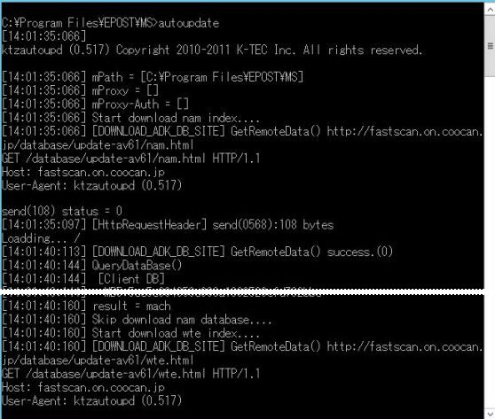

Enterprise II でアンチウイルスが働かず、記録ログがDドライブ直下にできたり、パターンファイルダウンロードができないときには １．プログラムインストールフォルダ先ドライブがショートファイルネームを有効にしているか確認 ２．ショートファイルネームの有効か無効かの確認 〔Windows Server 2012 R2 の場合〕 fsutil 8dot3name query D: [Enter]３．ショートファイルネームの有効化 〔Windows Server 2012 R2 の場合〕 fsutil 8dot3name set 2 [Enter]fsutil 8dot3name set D: 0 [Enter]４．ショートファイルネームでのパス表記を確認 ５．レジストリに登録されているVMCSサービス（modifys.exe）のパス表記
HKEY_LOCAL_MACHINE ６．VMCSサービス（modifys.exe）の再起動 ７．コマンドプロンプトからダウンロード確認 プログラムインストールフォルダから“autoupdate.exe”の実行

（関連FAQ） ウイルスパターンファイル更新の記録を取るには